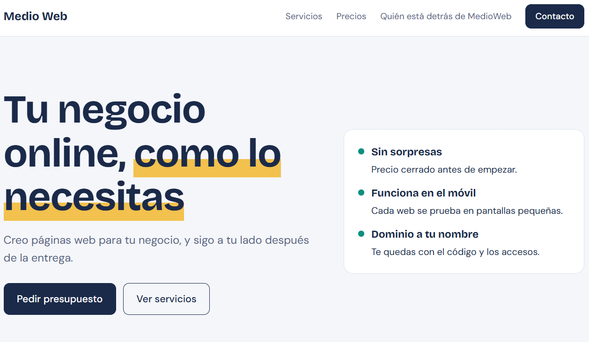
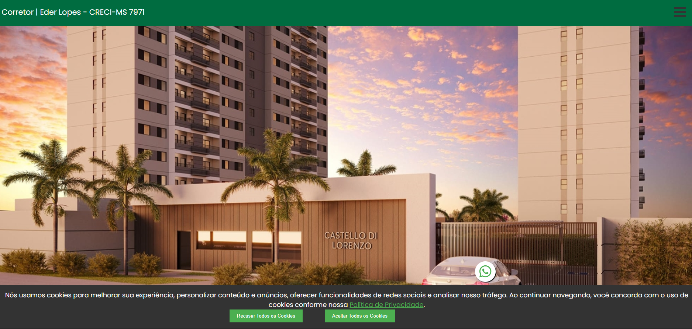

Medio Web
Sitio web de servicios para clientes de Madrid: inicio, servicios, precios, contacto y privacidad.
(junior)Técnico ASIR · Desarrollador Full Stack
Combino conocimientos de desarrollo web, bases de datos y soporte técnico. Vivo en Madrid y, como perfil junior, busco una oportunidad profesional en ciberseguridad. También estoy abierto a puestos junior de soporte IT o help desk, donde pueda aportar mis conocimientos técnicos y seguir desarrollándome profesionalmente.
Lo que he construido, con demo y código.

Sitio web de servicios para clientes de Madrid: inicio, servicios, precios, contacto y privacidad.

Sitio web de servicios para inmobiliaria de Campo Grande-MS /Brasil.
De lo más reciente a lo más antiguo.
Prometeu / The Powers · Madrid
Administración de Sistemas Informáticos en Red: redes, sistemas y bases de datos.
Grupo DM10 · São Paulo, Brasil
Grupo DM10 · São Paulo, Brasil
Escríbeme por el canal que prefieras. Te respondo rápido.